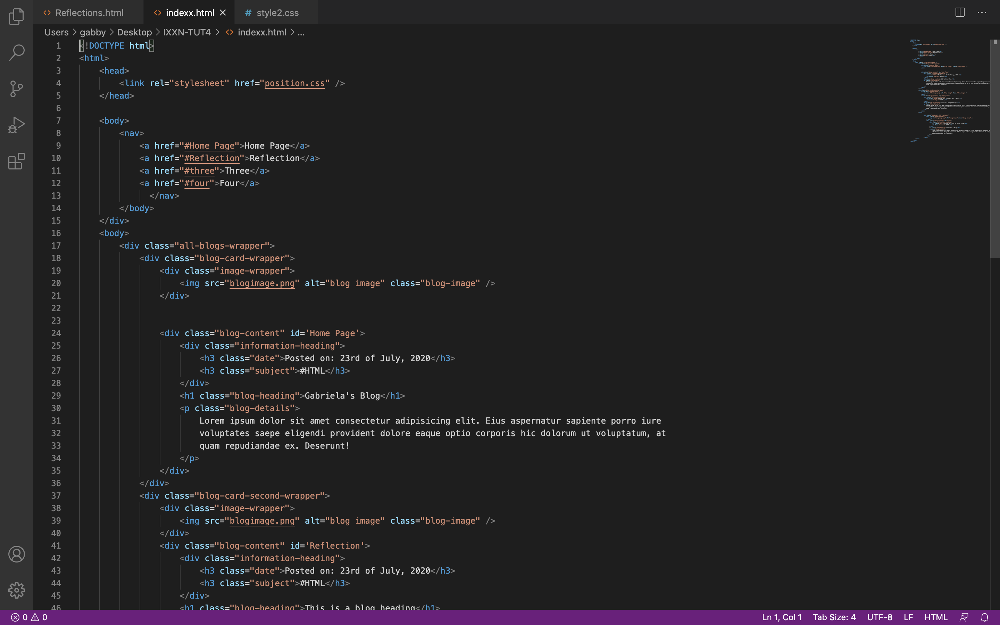

Tutorial Two
In this tutorial we were told to find a website we found interesting and inspect the webpage to see how it structured, I chose to do a website about design principles.
In html we used basic steps to set up a website with a navigation bar, title and paragraph section. This being my first time ever coding it was very difficult to understand what each thing meant or how things were connecting. After playing around with the code I managed to give the website a background colour and change the text colour. Due to m lack of knowledge in coding I only was able to do basic things to my website with very little detail, however it was very interesting inspecting the webpage to see what code controls what and I think this aspect was very helpful for me.
Tutorial Three
Today’s tutorial I first constructed simple wireframes for my blog assignment and a 300 word on an interpretation of why git can be good for a group of designers that want to create and demo a short-notice website redesign prototype.
Git is designed to be a software that benefits for designers, developers, marketers,
product management, as well as coding. The idea of this system is to basically present an
easier way to track changes to files, while also cloning files if need be with more than one
individual. Git is ideal for group work as it allows everyone in the group to work on the
same document, the work done is also up to date and all changes are refreshed and
tracked.
The tools provided include tools and features for minimal task managements, this can be
beneficial when something goes wrong or breaks on a task you’re working on. Git allows
you to be able to go back to old versions of work in order to fix or compare the changes
between the old and new projects. Git is more advance than other files, for instance Git is
more about the content in the file as it uses a merge of delta encoding, which stores
content differences. For a developer, the way git performs as a software that is
distributed, merging, committing new changes and and comparing past versions of work
is very favourable.
Git is the most advance software system in the market today, the features it contains
makes the application the most suitable for team developers. Git security is something
that any developer would want in a software. Git repository allow a security with a
‘cryptographically secure hashing algorithm’ called SHA1, which assures that the code
and any changes are fully traceable and secure.
Tutorial Four

Today we were given a template to work on that is set out to what a blog website would look like. Using css i played around with the template to change around the look of the blog in comparison to the original. I managed in html to change the picture and adjust the size of it as well as in css adjust the width of the blog frame in the middle to be wider and fit the whole page better.
Tutorial Five
For this tutorial we were given a template website again and had to use css functions to make it responsive as well as change the layout with flexbox. I found making the website responsive quite challenging at the beginning since I was unfamiliar with the ‘display: flex;’ function or knew what it did. After a while I managed to re arrange the website to look like the ‘Readme’ instructions given in Github as much as possible.
Tutorial Six

We continued working on the previous tutorials exercise in this class which I went back and did some final adjustments and made sure the website was responsive for when it is opened on a phone. After finishing that, I went into my wireframes for the blog and started converting them into prototypes, I didn’t change much in my prototypes apart from adding potential colours that will be used as well as adding where text and imagery would be.
Tutorial Seven
Today we worked on assignment one, today I did my two wireframes for the assignment and did some annotations in order to explain how and why everything is linked and justify why I did what I did in the wireframes for my website. I did two wireframes to then in the end decide on which one I will choose as my final, one of the wireframe is clearly much more detailed than the second one, I did this to see which one I would prefer and which one would be more user friendly.
Tutorial Nine

We were introduced to JavaScript in today’s lesson and were given a task where we had to go on w3school and learn how to create a javaScript with buttons to click on that change the chosen image. I decided to do a closed mouth to an open mouth. I found this tutorial quite straight forward and the end result worked quite well which I was pleased with.
Tutorial Ten
Dark mode was introduced to us in this tutorial and were once again given a template to work on ourselves. I personally found this tutorial the hardest as I could not figure out how to do it after many attempts I simply did not understand how to do it. I came back to it after a few more tutorials to try again but was unsuccessful.
Tutorial Eleven
In today’s lesson we were put into allocated groups for the group project, we each had to pitch an idea for a website that we will then in the end have to code together. The idea I pitched was a website that introduces a new product as it is something completely new and all is made up. Everyone in the group then pitched there ideas and in the end we decided to go with doing a website on a new product called ‘Tracker’. We then discussed basic things for the product and all decided to do two user personas and stories.
Tutorial Twelve
Today as a group we discussed what pages are needed for our website and roughly what we will have on each one. We then did a rough plan for a user flow diagram and then brought it into figma where we can all see and edit if need be. We then set up a Pinterest board that we all can use to get an idea of what style we wanted our website to be.
Click here to see
Tutorial Thirteen
In this tutorial we started with a lecture going over the difference between a Blockframe, Wireframe and Prototype and why they help us communicate to our client when designing, developing and building a website. My group decided we would all do our own block frames for the website to start with and then come together after to decide to use all or some and make a final one altogether. In my blockframes I kept it simple as our goal for our website was to have a clean simple look and took inspiration from ‘Apple’ as that it the theme we want our brand to have.
The brand 'Apple' is our precedent we used to get inspiration for our website
Tutorial Fourteen
Today’s tutorial was similar to last ones as we just continued working towards our group projects and using last week’s final blockframes in order to construct the wireframes for our website. In the Wireframes we changed us the layout a bit in comparison to the blockframe, we decided to have the home page as a scroll page which will also include the about us page, how It works, and testimonials. We also used the ‘prototype’ function in figma to determine how our pages would link to each other and show the users experience with the website.
Tutorial Fifteen
This tutorial we began with a lecture on Prototyping, we went over different methods and trends in prototyping as well as covering its importance in experimenting and testing ideas with your end users. We then were told to begin processing our prototypes for our websites. As a group we decided on a colour palette, typography and photos. For our colour palette we chose to do only 5 colours with a blue as the accent colour that makes the website stand out. The typography we used was ‘Poppins’ for titles and ‘Roboto’ for paragraphs, we chose these fonts as they are clean and clear which gives a tidy look. For photos of our product ‘Tracker’ we got Cooper to make renders of our made up product which was a good idea since its all authentic.
Tutorial sixteen
In today’s lecture we talked about the importance of user testing and what techniques and approaches you use in order to have a successful user experience. While the group continued working on prototypes, Cooper and I decided to construct rough questions to find out how a user interacts with our website. We then put our questions on google doc and Jenny added/ edited some and got a friend to answer them.
Tutorial Seventeen
Here is our google forms with our questions for a user
In today’s lecture we talked about the importance of user testing and what techniques and approaches you use in order to have a successful user experience. While the group continued working on prototypes, Cooper and I decided to construct rough questions to find out how a user interacts with our website. We then put our questions on google doc and Jenny added/ edited some and got a friend to answer them.
Tutorial Eighteen
Today was Presentations of our website prototypes in class, every group went up and presented their work while receiving feedback from the class and tutors. Cooper Ella and myself presented our prototypes in person and Sophia was on the zoom call, we received feedback about fixing our navigation bar to make it more clear and also changing our images to not be cropped as it was unnecessary. After presenting we went back and did a few changes on the prototypes using everyone’s feedback in order for the user experience to flow better.
Tutorial Nineteen
This week we are beginning to start coding our websites using all the previous tutorials and work to help us make it come alive. We were told to have one person in the group set up the GitHub so then when we code everything is pushed to one master and it all links together. This was quite difficult as no one in our group knew how to set up a GitHub master, I decided I would attempt to do it and thankfully in the end it was successful. I set up the GitHub and uploaded rough files for us to start working on when we begin to code.